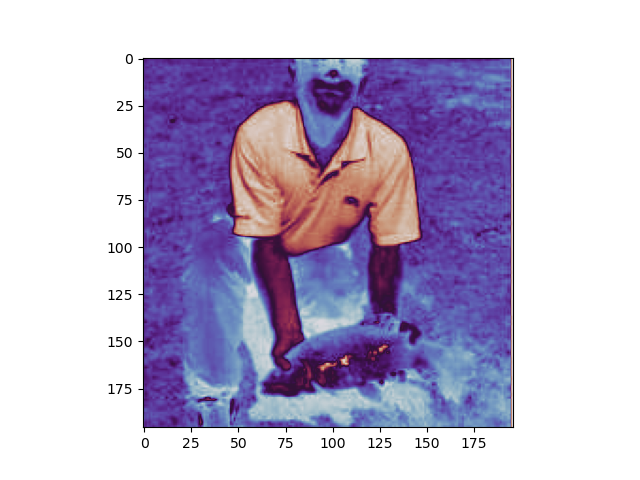
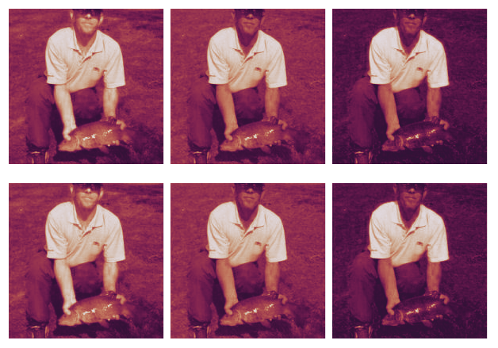
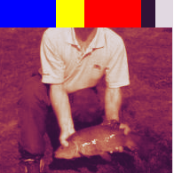
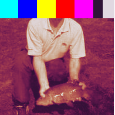
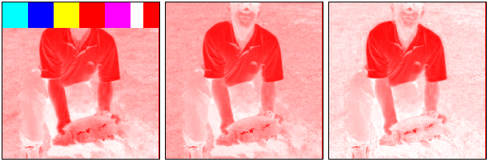

lo(image_01).rgb🎨 color mapping
plt.imshow(image_11[:,:,1], cmap="twilight", vmin=-1); # One single channel.
This works, but now this would be interpreted as a 1960 196x3 RGBA images.
What I had in ming was more like 30 196x196 RGBA images (3 channels for each of the 10 images).
Keep this in mind when using cmap.
image_batch = image_01.transpose(2,0,1)[None].repeat(10, axis=0)
print(lo(image_batch))
vals = (image_batch + 1)/2
lut_idxs = (vals * cmap.N).astype(np.int64)
mapped = lut.take(lut_idxs, axis=0, mode="clip")
print(lo(mapped))
lo(mapped[:2]).rgb # First 2 of the images, each as 3 channels.array[10, 3, 196, 196] n=1152480 x∈[-4.053e-09, 1.000] μ=0.361 σ=0.248
array[10, 3, 196, 196, 4] n=4609920 x∈[0.067, 1.000] μ=0.534 σ=0.334
Extend the lut to cover +/-inf too.
InfCmap
InfCmap (cmap:matplotlib.colors.Colormap, below:Optional[str]=None, above:Optional[str]=None, nan:Optional[str]=None, ninf:Optional[str]=None, pinf:Optional[str]=None)
Matplotlib colormap extended to have colors for +/-inf
Parameters extept cmap are matplotlib color strings.
| Type | Default | Details | |
|---|---|---|---|
| cmap | Colormap | Base matplotlib colormap | |
| below | typing.Optional[str] | None | Values below 0 |
| above | typing.Optional[str] | None | Values above 1 |
| nan | typing.Optional[str] | None | NaNs |
| ninf | typing.Optional[str] | None | -inf |
| pinf | typing.Optional[str] | None | +inf |
tcmap = InfCmap(get_cmap("twilight"),
below="blue", above="red", nan="yellow")
rgb(tcmap(bad_image[:,:,0])) # Note: Mapped only first channel
tcmap = InfCmap(get_cmap("twilight"),
below="blue", above="red",
nan="yellow", ninf="cyan", pinf="fuchsia")
rgb(tcmap(bad_image)[:,:,0]) # Note: Mapped all channels, show only the mapping for the first.
tcmap = InfCmap(get_cmap("bwr"),
below="blue", above="red",
nan="yellow", ninf="cyan", pinf="fuchsia")
rgb(tcmap(bad_image.transpose(2,0,1)))